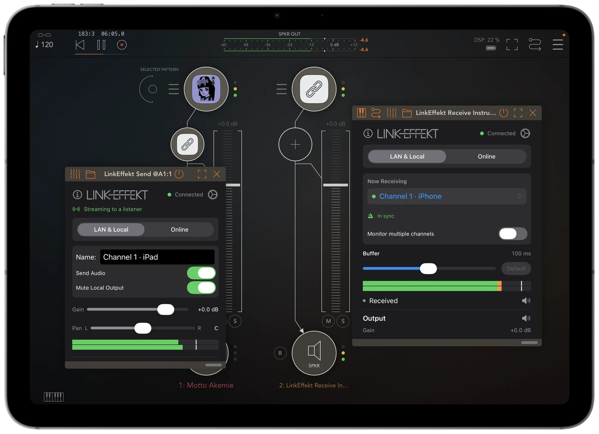

New in 2.1: your MIDI controllers on every device
Stream audio between your music apps, right on the beat.
Send a track in one app. Hear it in another app on the same device, on a second device or online with a partner, right on your beat. Ableton Live 12.4+ receives it too.
In sync in AUM and Logic Pro. Bar Sync in every other host.


AUv3: runs inside the host you already use
Load LinkEffekt in AUM, Logic Pro, Cubasis, GarageBand, Drambo, djay or any other AUv3 host. No standalone routing app, no cables.
- LinkEffekt Send
- An audio effect. Insert it on a track to stream that track's stereo audio. Each instance is its own named channel.
- LinkEffekt Receive
- An audio effect. Pick a channel and hear it. Works in every host. Monitor several channels at once with the in-app purchase.
- LinkEffekt Receive Instrument
- The same receiver as a sound source, for AUM source slots and software-instrument tracks.
New in 2.1: your controllers on every device
Plug a MIDI controller into your iPad, iPhone or Mac and play it on all of them. Your mappings stay when you plug it in elsewhere.
- LinkEffekt MIDI
- A MIDI effect. Brings the controllers of all your devices into your host, each on its own output. Link clock sends MIDI clock from Ableton Link to gear without Link.
- LinkEffekt for Mac
- Lives in the menu bar. Shares the controllers plugged into your Mac and gives every app the controllers of your iPad and iPhone, named like the hardware, so Ableton Live keeps your mappings.
One host, one device, your network, or the internet
- On this device or your network
-
Another app on the same device, or another track in the same host: on the beat with almost no delay, a direct path with no Wi-Fi, no Local Network permission and no Link setup.
On the same Wi-Fi there is nothing to set up: channels appear by name and device.
On the beat between devices, in both directions of a jam (sender in AUM or Logic Pro). Where the sending app cannot do that, Bar Sync locks the audio to your bar.
Streams straight into Ableton Live 12.4+.
- Online, in rooms over the internet
-
Create a room, share the code, jam together. Peer-to-peer and encrypted end-to-end (DTLS).
Bar Sync delays by whole bars: the peer's “1” lands on your “1”.
Two-way audio in a single slot with “Send my track”, for example two DJs back to back in djay.
Free to start, one purchase for everything
- Free
- 1 Send and 1 Receive channel, fully functional on your local network, and one shared MIDI controller per device. No account, no ads.
- Unlimited Channels
- One-time purchase: unlimited instances, multi-channel monitoring, the Online (internet) mode and sharing every MIDI controller.
Requirements
iOS 15 or later on iPhone and iPad, in any AUv3 host. Ableton Live 12.4+ on the same network sends and receives too. For MIDI controllers on a Mac: Apple Silicon and macOS 14 or later.